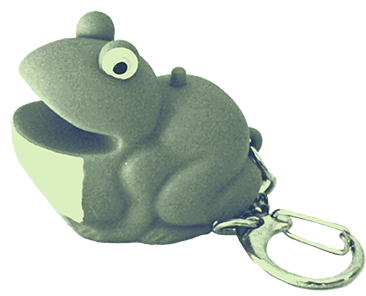

Purpose
#videogames
I am making it a personal goal to try and write about every game I play. I don't care if I write two terrible sentences, I just want something.
I will not go back through and write about what I have already
Website
Please contact me if anything on this website is inaccessible.
Currently the only way to contact me, beside the Neocities comment system, is through my
Any link that goes to content on this website will open in the current tab, any link that goes to content outside of this website will open in a new tab.
Javascript and custom elements are used to generate this website. All modern browsers should be okay with Javascript and custom elements.
Cookies
This website stores cookies, but only to store the your preferences.
Only the following information is stored
- List or grid preference for the home page
- Preference for default styling or accessible styling (effects colors mostly)
Friends

Go to my friend